CH13 — ep
episode一覧（サムネ付き / 綺麗なURL）
ep
Script Viewer
snapshot
guide
ブッダの禅処方箋 (CH13)
script 30/30
updated_at: 2026-01-13T07:31:31.224813Z
URL例:
/ep/CH13/001/thumb/
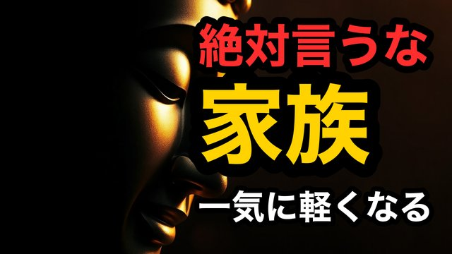
CH13-001
【家族】家族に振り回される人へ｜最初にやめる一言
script ✓
画像 —
CH13-002
【夫婦】我慢が続くほど壊れる｜会話の線引き
script ✓
画像 53
CH13-003
【口出し】善意で口を出すほど嫌われる｜関係が壊れる前にやめる一言
script ✓
画像 53
CH13-004
【断り方】行きたくない誘いは“これ”で終わる｜角を立てずに切る
script ✓
画像 60
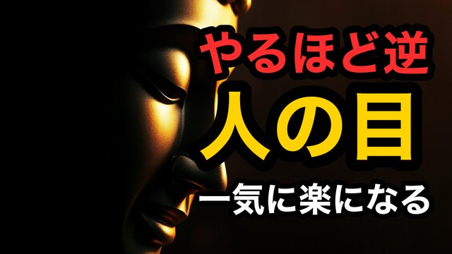
CH13-005
【人の目】人の目が怖い人へ｜怖さの正体は“損”
script ✓
画像 63
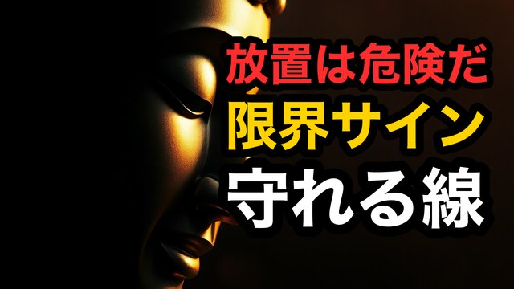
CH13-006
【限界】頑張るほど心が荒れる｜壊れる前に引く線
script ✓
画像 51
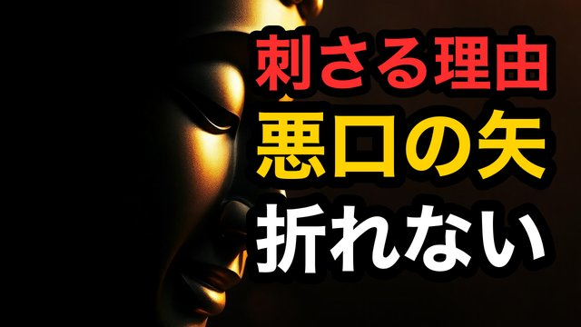
CH13-007
【悪口】悪口が刺さる人へ｜刺さる場所は“ここ”
script ✓
画像 —
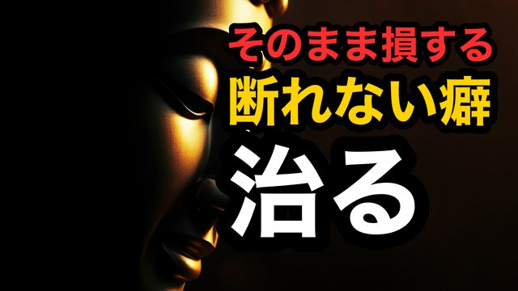
CH13-008
【断れない】断れない人の盲点｜そのまま損する
script ✓
画像 —
CH13-009
【謝る癖】すぐ謝るほどナメられる｜丁寧に拒否する言葉
script ✓
画像 —
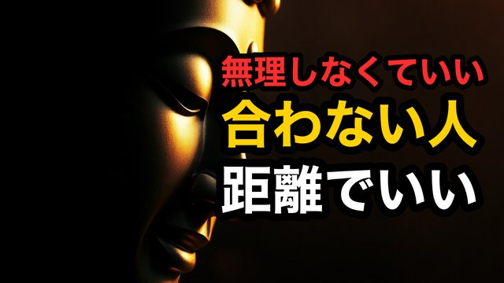
CH13-010
【距離】嫌いじゃないのに疲れる｜壊さず離れる技術
script ✓
画像 —
CH13-011
【寂しさ】会えない相手が頭から離れない｜寂しさを増やす罠
script ✓
画像 —
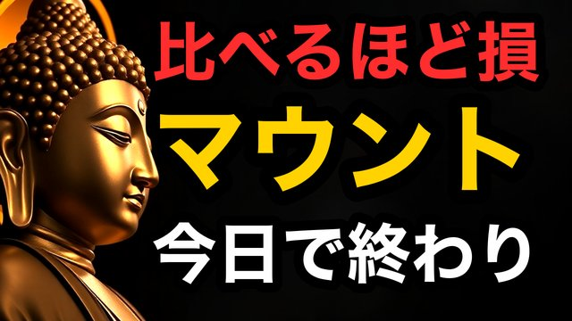
CH13-012
【マウント】マウントに勝とうとするな｜勝つ必要はない
script ✓
画像 —
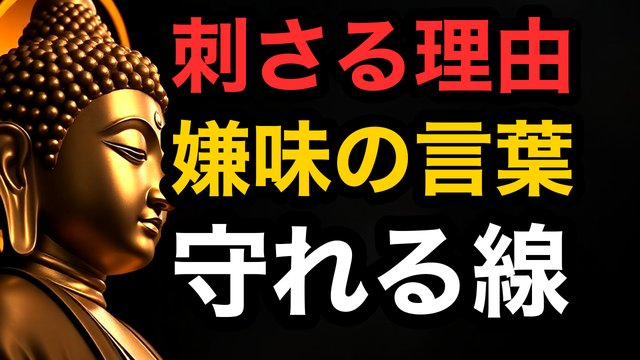
CH13-013
【嫌味】嫌味に刺されない｜静かに勝つ返し方
script ✓
画像 —
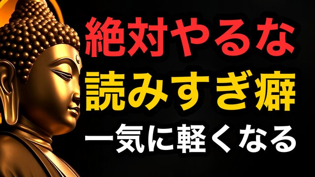
CH13-014
【空気】空気を読むほど損する｜読まない勇気
script ✓
画像 —
CH13-015
【対立】揉めるのが怖い人へ｜揉めないための線
script ✓
画像 —
CH13-016
【要求】要求が多い人に与えるな｜与えるほど増える
script ✓
画像 —
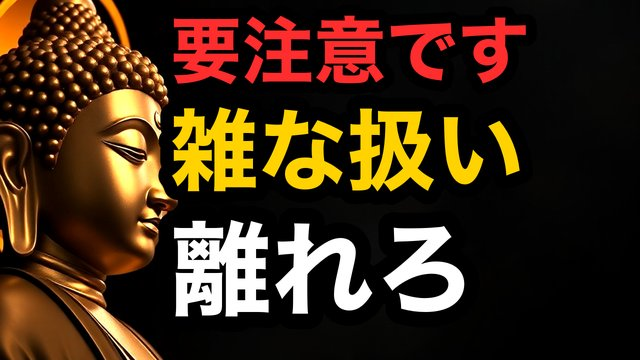
CH13-017
【無視】雑に扱う人を近くに置くな｜距離が薬
script ✓
画像 —
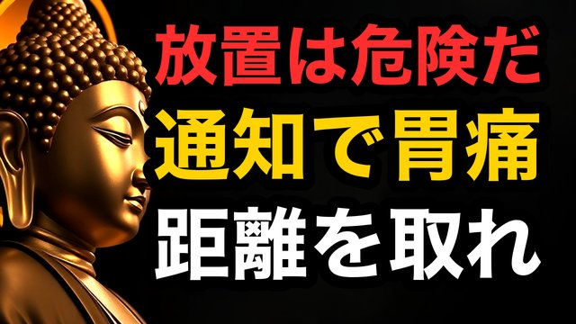
CH13-018
【連絡】連絡が来るだけで胃が痛い｜体が答えてる
script ✓
画像 —
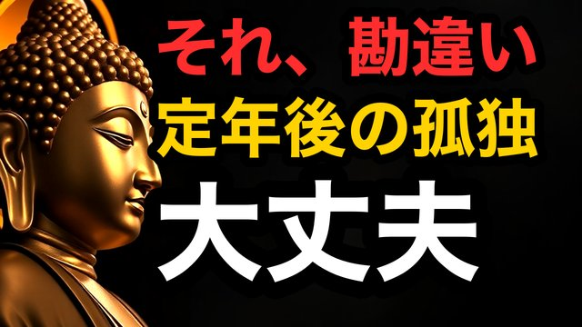
CH13-019
【孤独】ひとりが怖い人へ｜孤独は敗北じゃない
script ✓
画像 —
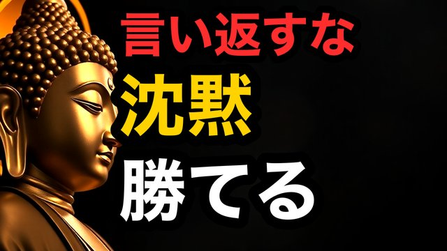
CH13-020
【沈黙】言い返せないなら沈黙でいい｜沈黙は最強の返答
script ✓
画像 —
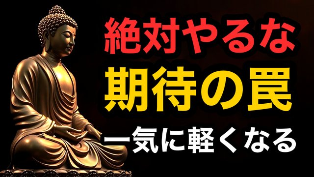
CH13-021
【期待】期待するほど苦しい｜期待は愛じゃない
script ✓
画像 —
CH13-022
【会話ゼロ】会話ゼロの関係｜放置が一番危険
script ✓
画像 —
CH13-023
【不公平】自分ばかり頑張ってる｜怒る前に決める線
script ✓
画像 —
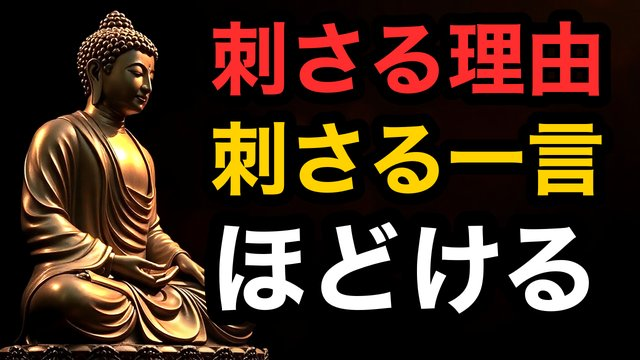
CH13-024
【刺さる一言】冷たい一言が刺さる｜刺さる理由はここ
script ✓
画像 —
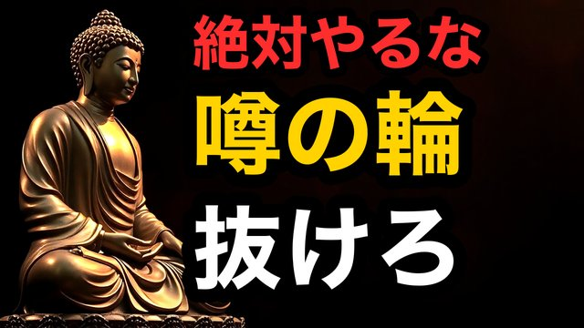
CH13-025
【噂】噂話に巻き込まれる｜抜ける一手
script ✓
画像 —
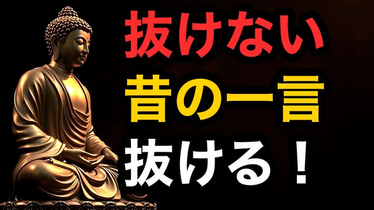
CH13-026
【刺さる記憶】昔の一言が今も刺さる｜抜くのは復讐じゃない
script ✓
画像 —
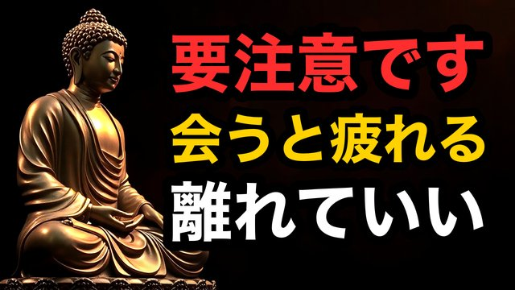
CH13-027
【友人】会うほど疲れる友人｜相性ではないサイン
script ✓
画像 —
CH13-028
【境界線】境界線は冷たさではない｜慈悲の技術
script ✓
画像 —
CH13-029
【機嫌】相手の機嫌に振り回される｜反応をやめろ
script ✓
画像 —
CH13-030
【人間関係】相手を変えずに楽になる｜一気に軽くなる見方
script ✓
画像 —